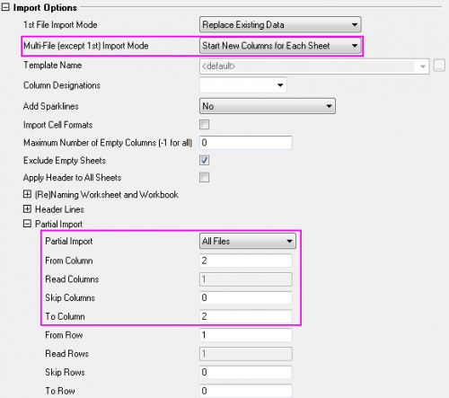

FAQ-437 Kann Origin bestimmte Spalten aus verschiedenen Excel-Blättern importieren?
Import-Certain-Column-Excel
Letztes Update: 20.02.2017
Wenn Sie mehrere Excel-Dateien haben und bestimmte Spalten (zum Beispiel die zweite Spalte) aus jeder Datei in ein einzelnes Origin-Arbeitsblatt importieren möchten, verwenden Sie Importmodus für mehrere Dateien und Partieller Import:
- Klicken Sie auf Datei: Import: EXCEL(XLS, XLSX, XLSM).... Wählen Sie dann mehrere Excel-Dateien und öffnen Sie den Dialog impMSExcel (Origin 2015 und 2016 verwenden den Dialog impExcel, aber die Vorgehensweise ist die gleiche).
- Legen Sie unter Importoptionen den Importmodus für mehrere Dateien (außer der 1. Datei) mit Neue Spalten für jedes Blatt öffnen fest.
- Wählen Sie im Unterzweig Partieller Import die Option Alle Dateien unter Partieller Import und legen Sie dann fest, wie die Spalten importiert werden sollen. Wenn Sie beispielsweise Aus Spalte und Zu Spalte auf 2 setzen, können Sie die zweite Spalte von jedem Excel-Blatt in ein Origin-Arbeitsblatt importieren.
- Klicken Sie zum Importieren auf OK.
- 
Schlüsselwörter:Excel, teilweiser Import, partieller Import, mehrere Dateien importieren
Origin-Version mind. erforderlich: 2015 SR0